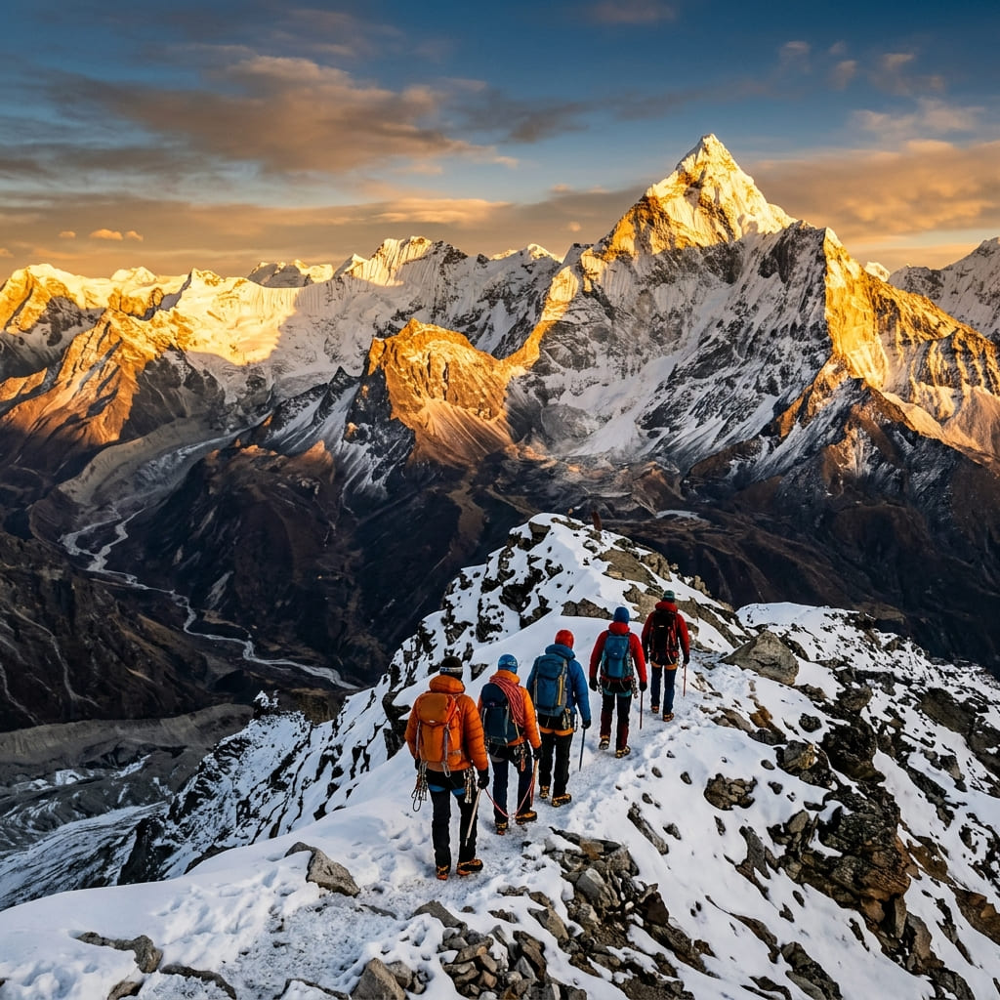
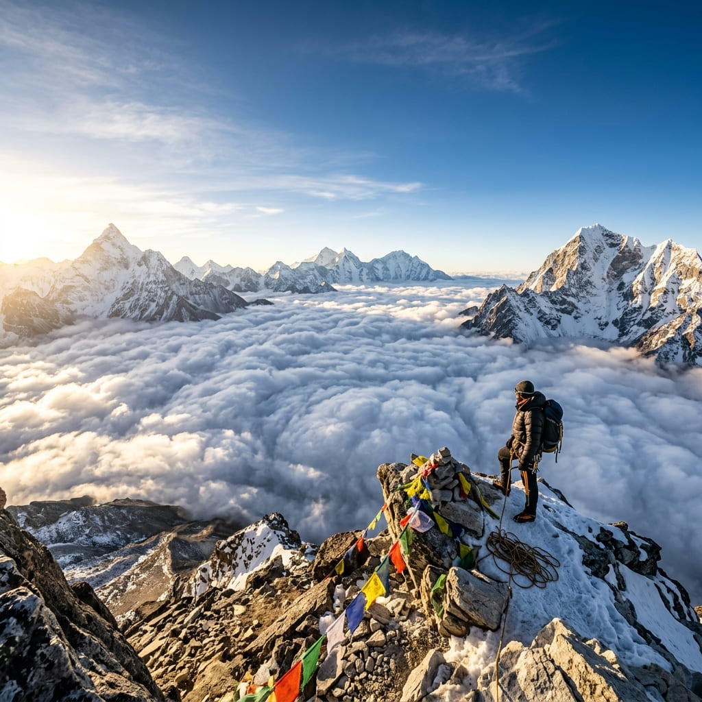

Sunset Peak Expedition
A longer four-day ridge journey nearby.
Explore
The peak that towers over our winter classroom, climbed in a single push from Gulmarg — a short, sharp ascent to 4,390 m and one of the great Himalayan panoramas.

The Climb
Apharwat is the mountain that defines Gulmarg's skyline — and the slope our skiers ride all winter. In summer its snow-streaked ridges make a superb short summit: ride the Gondola high, then earn the final airy ridgeline on foot.
Includes a night at an alpine camp for acclimatisation, a dawn summit for the clearest views, and a summit certificate to prove you stood on top of it.
₹7,500 / person · fixed departures Jun–Oct
Book This TripDay by Day
Acclimatisation walks in Gulmarg, then the Gondola to Phase 2 and a short ascent to a high alpine camp on the shoulder of Apharwat.
A pre-dawn start for the 4,390 m summit and its 360° panorama — the Pir Panjal at your feet and, on clear days, Nanga Parbat on the horizon — then descend.
Why You'll Love It
Stand at 4,390 m on the peak that watches over Gulmarg — no technical climbing required.
Ride one of the world's highest cable cars to Phase 2 before the ascent begins.
The entire Pir Panjal, the Kashmir valley, and Nanga Parbat on the clearest mornings.
The Fine Print
Good to Know
No technical climbing is required, but it is a steep, high-altitude walk to 4,390 m. Good fitness and a head for altitude are important; we ascend with certified guides.
We ride the Gulmarg Gondola to Phase 2 (~3,950 m), then ascend the final ridgeline on foot.
Yes as a long day-push in good conditions, but we recommend the 2-day version with an alpine camp for acclimatisation and a dawn summit.
June to October, once the snow has consolidated or cleared. Winter ascents are ski-mountaineering expeditions arranged separately.
A short climb, a huge reward — reserve your Apharwat summit dates.